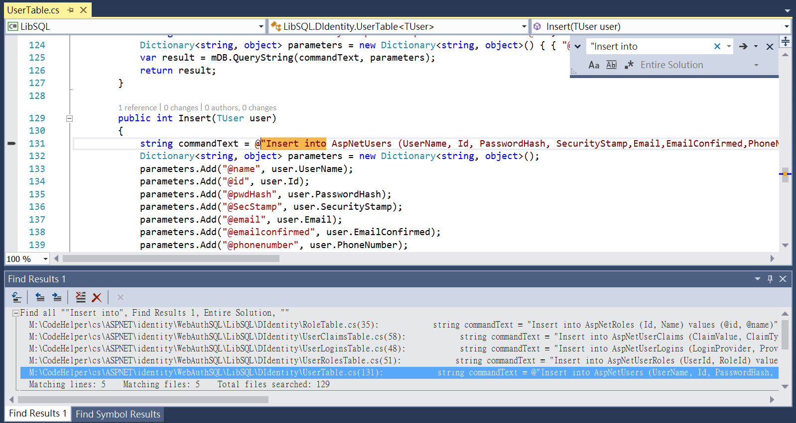
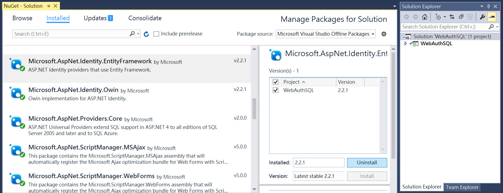
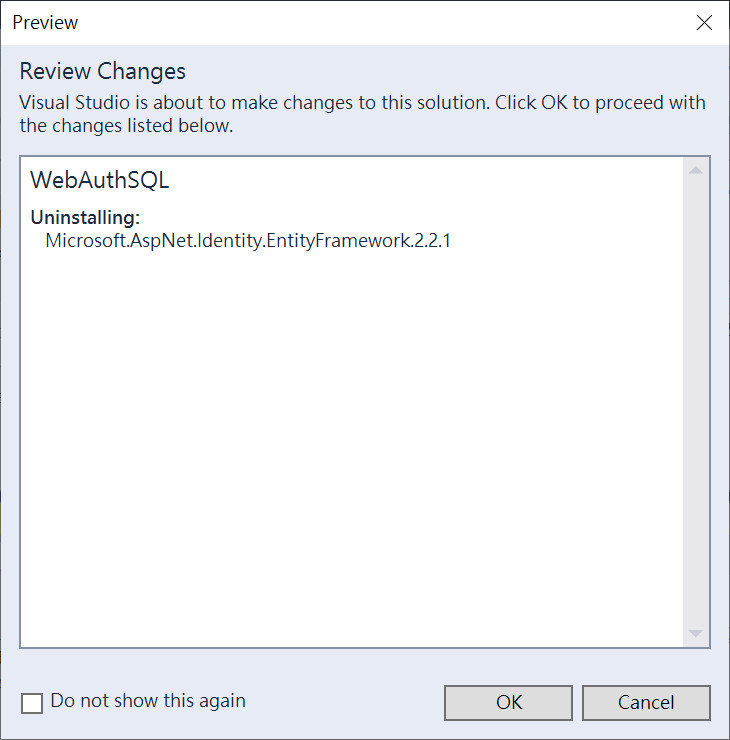
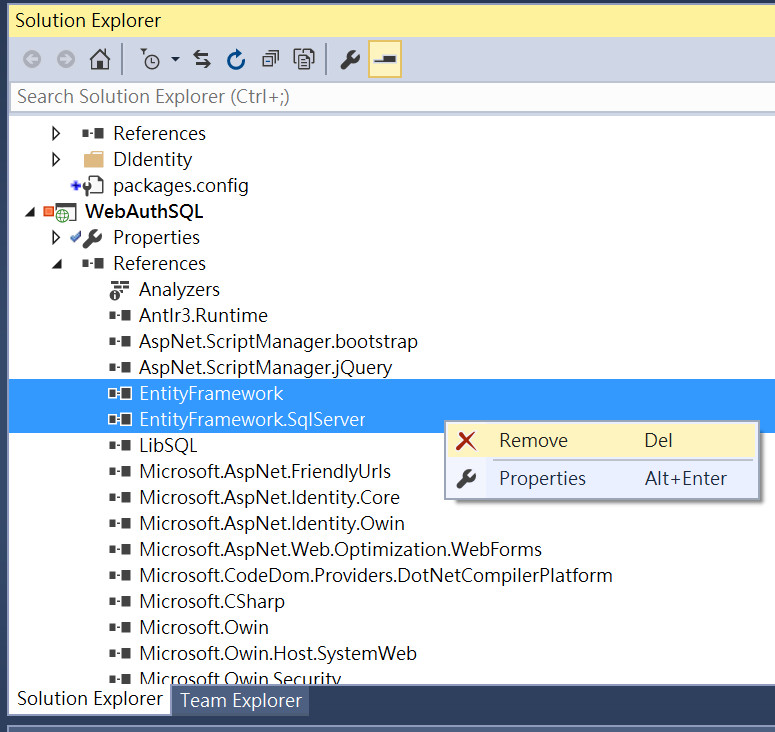
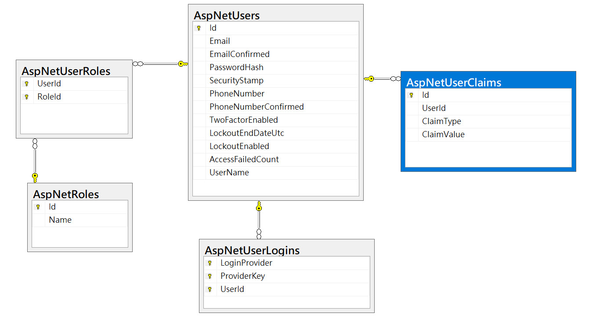
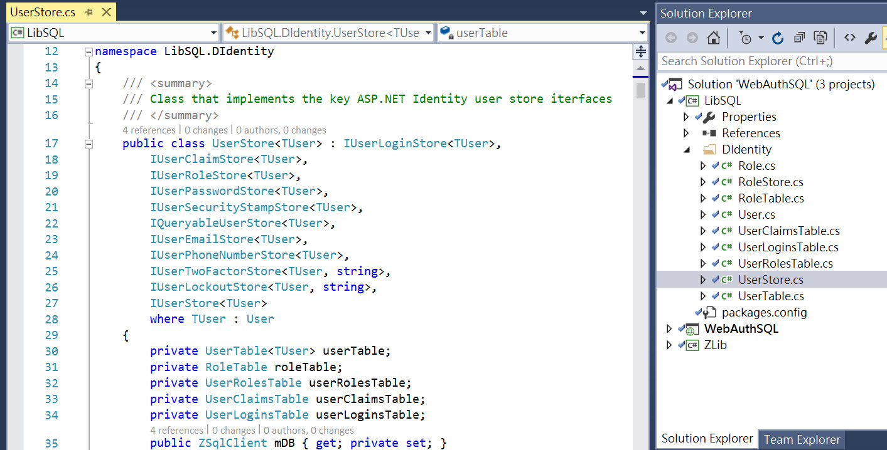
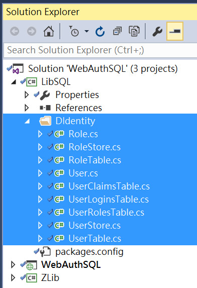
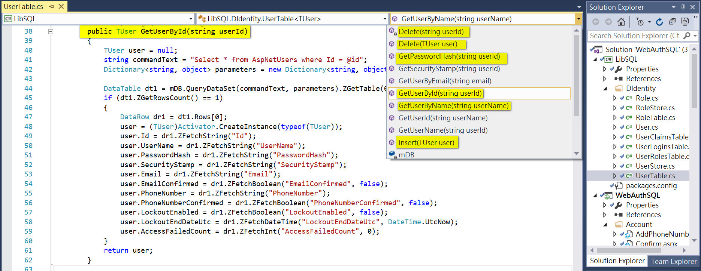
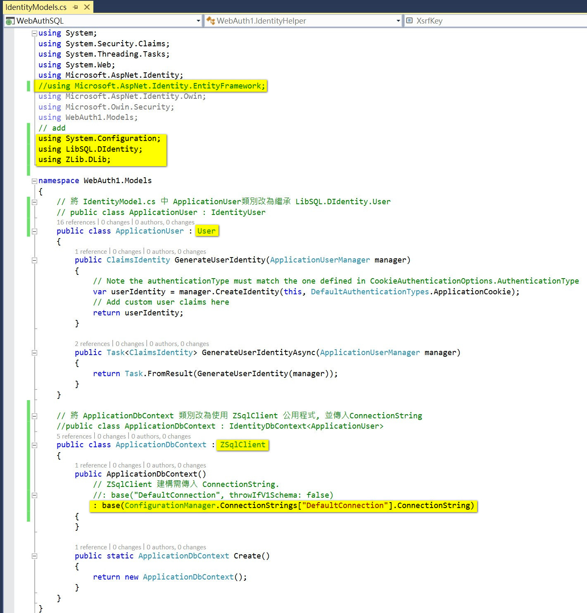
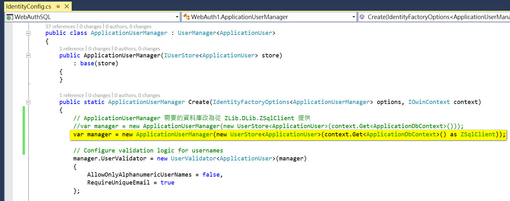

From:
hondachen@hotmail.com
Date:
2019-03-08
Subject:
以 SQL 實作 ASP.NET Identity
本文介紹以 SQL 語法的方式 實作 ASP.NET Identity, 替換掉 EntityFramework Code first .
目錄:
- 建立網站 WebAuthSQL
- 解除安裝 Microsoft.AspNet.Identity.EntityFramework 元件
- 移除參考 EntityFramework 及 EntityFramework.SQLServer
- 加入以 SQL 語法製作的 ASP.NET Identity 自訂元件
- 將 EntityFramework 改為使用 LibSQL.DIdentity
- 將 ApplicationUser 改為繼承 LibSQL.DIdentity.User., ApplicationDbContext 改為繼承 ZLib.DLib.ZSqlClient
- 將 ApplicationUserManager 類別需要的資料庫改為由 ZLib.DLib.ZSqlClient 提供
- 將 ConnnectionString 改到新的資料庫位置
- 建立新ASP.NET Identity身分認證資料庫, 移除舊資料庫
- 編譯執行測試
範例程式可自
WebAuthSQL取得.
以 Visual studio 2015 template 建立的的 ASP.NET 網站(template=Web Forms, Authentication=Indivisual User Account), 預設會採用 EntityFramework Code first 方式實作 ASP.NET Identity. 常見問題如下:
- 開發者必須熟悉並依循 EntityFramework Code First 的運作方式(例如: Migrations ), 以程式碼為中心, 才能應付資料庫的擴充需求.
- 若正式環境資料庫受管制, 不可變更資料庫結構, 則必須尋求其他方法, 替代 EntityFramework Code First 以程式碼方式, 變動資料庫結構的程序.
- 團隊成員不熟悉 EntityFramework Code First + LINQ: 原本熟悉 SQL 的開發團隊可以輕易解決的問題, 改用 EntityFramework Code First + LINQ後, 難以寫出複雜邏輯、或程式執行結果非預期、效能差, 需付出更多的專案資源才能完成, 原本熟悉SQL的其他成員(PM、SQ、SD、DBA、User...等), 更不可能熟悉 EntityFramework Code First + LINQ 程式碼, 無法再透過 SQL 描述的開發文件協助確認符合需求、或是檢驗原始碼以及維護資料庫.
每一種技術都有其獨特性, 必需透過熟練的人員運用在適當的場合, 才會事半功倍!
實務上能熟悉 EntityFramework Code First 的開發人員就是不多. 大多數的人都熟悉 SQL 不忘, 就是不熟悉 EntityFramework Code First. 因此最直覺的解決方案, 還是捨棄 EntityFramework Code First, 改用傳統的 SQL 方式就好, 讓原本熟悉 SQL 的人才, 繼續貢獻原有的專長.
依照本文內容修改以後, 就可以在專案中查詢 SQL 關鍵字, 很快查到結果如下:

其他的查詢例:
Update,
Delete,
Select.
步驟:
- 建立網站專案 WebAuthSQL
參考如何建立自行從Visual studio 2015建立WebAuth1專案, 或是直接從已完成的樣本取得WebAuth1專案.
將WebAuth1專案編譯完成, 並且測試成功後, 再把 Solution 及 Project 名稱都改為 WebAuthSQL. 作為本文要修改的 Solution 及 Project.
- 解除安裝 Microsoft.AspNet.Identity.EntityFramework 元件


- 移除參考 EntityFramework 及 EntityFramework.SQLServer

- 加入自訂的 ASP.NET Identity 實作程式
ASP.NET EntityFramework + Identity 實際上是由以下這些元件組成:
Microsoft.AspNet.Identity.EntityFramework
EntityFramework
EntityFramework.SQLServer
移除這些元件以後, 就必須提供相同的功能補上.
本文提供兩個程式庫專案補齊:
1. ZLib: 存取 SQL Server 資料庫公用函數. (也可用於 MSSQLLocalDB 或 SQL Express 資料庫)
2. LibSQL: 存取ASP.NET Identity身分認證資料庫程式.
請將這兩個專案, 加入 WebAuthSQL Solution 中並參考引.
ASP.NET Identity身分認證資料庫

ASP.NET EntityFramework + Identity 需要實作的內容相當多, 不是本文能涵蓋說明的範圍.
原本這些程式被封裝在移除的元件中, 好處是不用寫一行程式碼, 也不用管這些程式長在哪裡, 就可以立即享用.
好處也是缺點: 當你想要加點變化, 加上一行程式碼的時候, 就不容易找到這些被隱藏封裝的資訊, 必須在充分了解架構以後, 才能找到正確的控制點.
以UserStore介面為例, 就必須提供下圖這一堆介面. 如果是用不到的功能, 當然可以不用傻傻的實作每個介面, 省一點功夫:

Code First 比較嚴格, 會多寫一些對目標資料庫檢驗或驅動修改資料庫結構的程式, 以確保資料庫結構與程式碼相容.
相對的, DB First 開發模式比較寬鬆, 多半不會有檢驗或驅動修改資料庫結構的程式, 通常只檢驗程式與資料庫版本編號而已.
新建資料庫時, Code First 模式比較方便, 不需要另外人工執行建立資料庫的工作.
需要資料庫擴充時, 不管是Code First, 還是 DB First, 一樣都很複雜. 如果 Code First 還是要靠程式碼為中心, 堅持要在程式執行的時候, 才變更資料庫結構, 當然就比 DB First 多出許多狀況, 需要多寫程式碼解決.
不管是Code First 還是 DB First的模式, 當資料庫結構定義改變時, 都必須調整對應的的程式. 差別的是, Code first 最好是依循 EntityFramework 的框架修改; DB first 則應調整(SQL 指令對應的程式碼. 如下圖 RoleTable.cs, UserClaimsTable.cs, UserLoginsTable.cs, UserRolesTable.cs, UserTable.cs 都包含了以 SQL 指令實作的新增、修改、刪除與查詢函數:

以 UserTable.cs.GetUserById()為例, 是網站 ASP.NET Identity 取得資料庫 table=AspNetUsers 一筆資料的方法. 隱藏在預設元件中:

引用這兩個程式庫專案, 當你需要修改或擴充的時候, 只要在專案中搜尋 SQL 指令, 就可以找到需要修改的位置.
你也可以把這兩個程式庫專案, 當作黑箱或是以.dll的方式使用就好, 效果等於不用多寫一行程式碼.
如果你完全沒有修改或擴充 Identity 架構的需求, 建議沿用原來預設建立的專案樣本就好, 不用改成 SQL.
你也可以評估 把(LibSQL)跟(網站WebAuthSQL)兩個專案合併為一個網站專案, 不用隔離(資料處理)跟(Application).
接下來, 必須把網站專案 WebAuthSQL, 改為使用 ZLib 跟 LibSQL:
- 將 EntityFramework 改為使用 LibSQL.DIdentity
將專案 WebAuthSQL 中, 所有的 using Microsoft.AspNet.Identity.EntityFramework; 的.cs 程式, 都改成 using LibSQL.DIdentity;
需要修改的程式清單如下:
App_Start\IdentityConfig.cs
App_Start\Startup.Auth.cs
Models\IdentityModel.cs
Account\Manage.aspx.cs
- 將 ApplicationUser 改為繼承 LibSQL.DIdentity.User., ApplicationDbContext 改為繼承 ZLib.DLib.ZSqlClient
將專案 WebAuthSQL 的 Models\IdentityModel.cs ApplicationUser 類別改為繼承 LibSQL.DIdentity.User., ApplicationDbContext 類別改為繼承 ZLib.DLib.ZSqlClient, 並傳入ConnectionString

- 將 ApplicationUserManager 類別需要的資料庫改為由 ZLib.DLib.ZSqlClient 提供
將專案 WebAuthSQL 的 App_Start\IdentityConfig.cs ApplicationUserManager 類別需要的資料庫改為由 ZLib.DLib.ZSqlClient 提供

- 將 ConnnectionString 改到新的資料庫位置
將專案 WebAuthSQL 中 的 Web.config, 改成你的新資料庫位置, 如以下參考:
<add name="DefaultConnection" connectionString="Data Source=127.0.01;Initial Catalog=DBAspNet1;Integrated Security=True" providerName="System.Data.SqlClient" />
原為:
<add name="DefaultConnection" connectionString="Data Source=(LocalDb)\MSSQLLocalDB;AttachDbFilename=|DataDirectory|\aspnet-WebBase1Auth-20180924123716.mdf;Initial Catalog=aspnet-WebBase1Auth-20180924123716;Integrated Security=True" providerName="System.Data.SqlClient" />
- 建立新資料庫, 移除舊資料庫
參考 CreateDBAspNet1-SqlServer.sql
建立 SQL Server 新資料庫 DBAspNet1
移除在 App_Data 目錄下的舊資料庫 MSSQLLocalDB:
App_Data\*.MDF
App_Data\*.LDF
- 編譯執行測試
{kind=link}
{kind=link}
{kind=link}